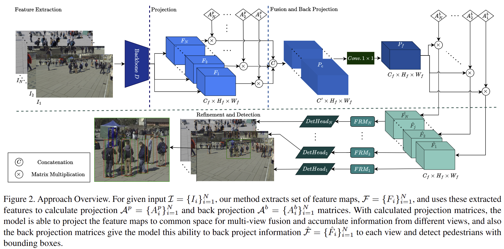
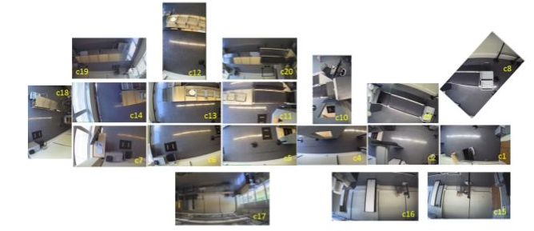

I turn uncalibrated multi-view images into compact 3D worlds — query-based transformers and analytic superquadric primitive abstraction for spatial computing.
Last calibrated: July 2026 · Gainesville, FL
As a Graduate Research Assistant working with Prof. Henry Medeiros at the University of Florida, I build systems that turn uncalibrated multi-view images directly into compact, interpretable 3D worlds — no camera calibration, no dense voxel grids, just analytic geometric primitives.
A query based multiview transformer utilizing a soft point to query assignment mechanism and a two stage decoder for predicting analytic superquadrics directly in world coordinates from RGB images.
An end-to-end multi-view transformer for dense 3D semantic occupancy, replacing rigid voxel grids with interpretable superquadric primitive assemblies.
Calibration-free multi-view object detection that fuses features across camera perspectives directly in image space — no bird's-eye view needed.
Bridging 2D images and 3D spatial intelligence.
My research bridges 2D images and 3D spatial intelligence — designing query-based transformers and implicit neural decoders that reconstruct 3D shape and scene structure without relying on rigid camera calibration.
At the University of Florida, I work with Prof. Henry Medeiros on ViSQ and SuperFormer, frameworks that fuse self-supervised foundation models with geometric primitives to turn unstructured multi-view captures into compact, analytic 3D assemblies. Earlier work — CaMuViD and CLASP — focused on calibration-free multi-view detection and tracking; before that, I worked independently on generative facial synthesis and image forensics (E2F-GAN, IRL-Net).
Day to day that's Python and PyTorch, deformable attention, and a lot of thinking about how to represent the world with fewer, more meaningful numbers. I'm driven by turning complex, unstructured visual environments into clean 3D assets for the next generation of spatial computing and creative tools.
A chronological capture of the journey so far.
NeurIPS · CVPR · IJCB · IEEE ACCESS · Journal of Supercomputing
From multi-view geometry to airport checkpoints.
Query-based multiview transformer predicting analytic superquadric primitives directly in world coordinates from RGB images — no online 3D optimization needed.
End-to-end multi-view transformer for dense 3D semantic occupancy, replacing rigid voxel grids with interpretable, analytic superquadric primitive assemblies.

Extends multi-view detection to work directly in each camera's image space, removing the need for calibration or a bird's-eye view while improving cross-view feature fusion.

Real-time multi-object tracking pipeline that associates interacting people and belongings in high-density, heavily occluded airport video, funded by DHS S&T via ALERT.